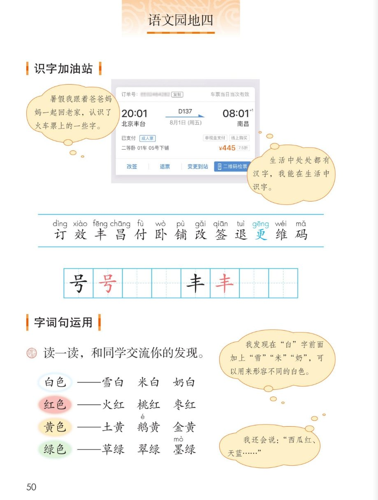
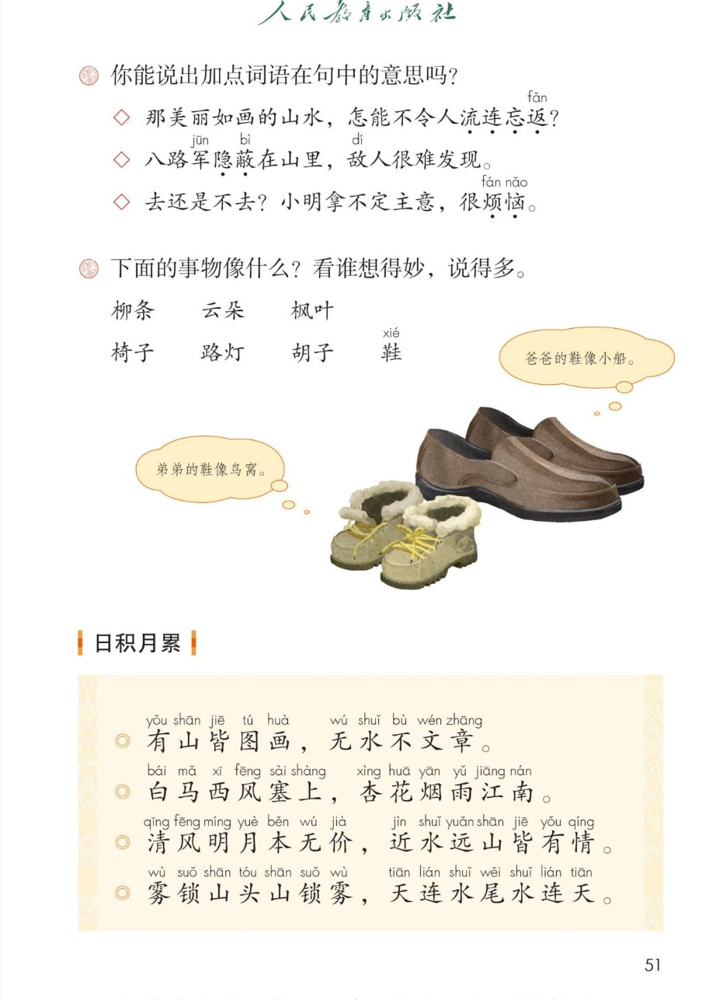
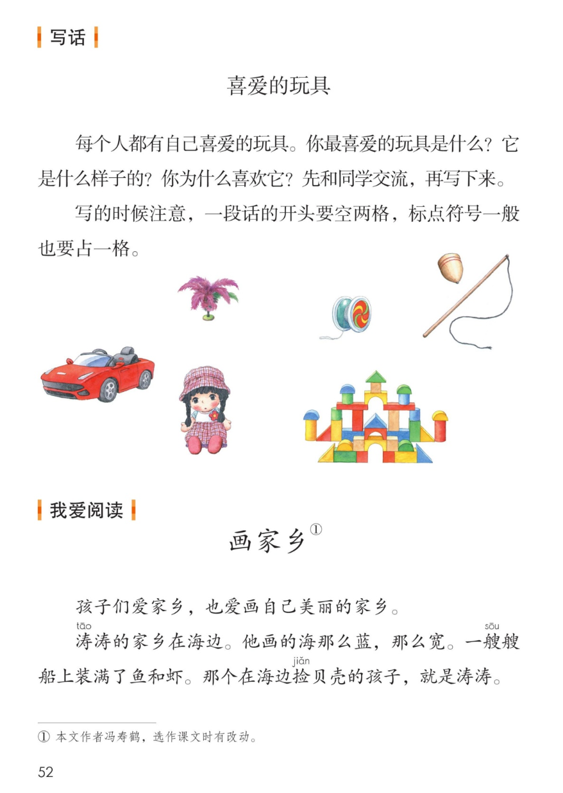
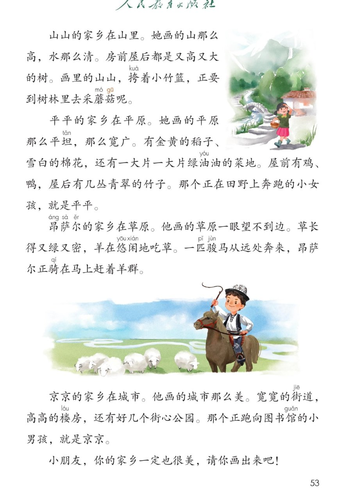

统编版 · 二年级上册 · 第四单元
第四单元 · 单元课件
语文园地四 · 火车票识字 · 颜色词 · 对联 · 写话 · 画家乡
课本第 50~53 页，点哪句读哪句
生活识字 13 字
会写 2 字
颜色词 12 个
对联 4 句
故事 1 篇
闯关 8 题
这个单元学了什么：登鹳雀楼看远处，游黄山、日月潭、葡萄沟——都是祖国的好风光。
语文园地四带大家在生活中识字（火车票上就有 13 个字），学颜色词和对联，
再读一篇《画家乡》。点一下任一卡片或句子，就能听。
① 识字加油站 · 火车票上的字
课本第 50 页
点票面上的字词听读音，红字是本页要认的 13 个字
课本气泡：暑假我跟着爸爸妈妈一起回老家，认识了火车票上的一些字。
订单号：订••••••
车票当日当次效
已付 · 成人票
二等卧 01车 05号下铺
¥445 7.5折
改签
退票
更维变更到站
二维码检票
课本气泡：生活中处处都有汉字，我能在生活中识字。——你也说一说，在哪里认识过字？
本页要认的字 · 13 个
都藏在火车票里，点字听读音
多音字小提醒：“铺”在卧铺、床铺里读 pù（课本注的是本音 pū）；“更”在变更里读 gēng，在更加里读 gèng。
② 写字 · 号 丰
课本第 50 页 · 田字格
点卡片听书写要点
③ 读一读，和同学交流你的发现
课本第 50 页
点词卡听读音
课本气泡：我发现在“白”字前面加上“雪”“米”“奶”，可以用来形容不同的白色。
课本气泡：我还会说：“西瓜红、天蓝……”——你也来照样子说几个。
④ 你能说出加点词语在句中的意思吗？
课本第 51 页
点句子揭晓参考答案
那美丽如画的山水，怎能不令人流连忘返？
流连忘返：留恋美景，舍不得离开。
先读句子，再联系“美丽如画”想一想：风景太美，人都忘了回家。
八路军隐蔽在山里，敌人很难发现。
隐蔽：把身影藏起来，不让人发现。
后面说“敌人很难发现”，往前面找答案：隐蔽就是把藏好。
去还是不去？小明拿不定主意，很烦恼。
烦恼：心里烦闷，不痛快。
拿不定主意，心里不痛快，这就是烦恼。
下面的事物像什么？看谁想得妙，说得多
课本第 51 页
点卡片，再照样子说一句
课本气泡：爸爸的鞋像小船。
课本气泡：弟弟的鞋像鸟窝。
老师的话：照样子说——“____像____”。两种事物要有相似的地方，才算说得妙。
⑤ 日积月累 · 写景名句
课本第 51 页
点哪句读哪句
有山皆图画，无水不文章。
白马西风塞上，杏花烟雨江南。
清风明月本无价，近水远山皆有情。
雾锁山头山锁雾，天连水尾水连天。
小知识（老师的话）：这四句都是写景的对联名句，上下句字数相同、结构相对，读起来朗朗上口。
“文章”在这里指华美的文采；“塞上”指北方的边塞，读 sài。
⑥ 写话 · 喜爱的玩具
课本第 52 页
先说一说，再写下来
课本原题：每个人都有自己喜爱的玩具。你最喜爱的玩具是什么？它是什么样子的？你为什么喜欢它？先和同学交流，再写下来。
1
选玩具
小汽车、布娃娃、积木、陀螺……选一个最喜爱的。
3
说原因
你为什么喜欢它？说一件和它有关的趣事更好。
写话支架（老师的话）：我最喜爱的玩具是____。它____。我喜欢它，因为____。
课本提醒：写的时候注意，一段话的开头要空两格，标点符号一般也要占一格。
⑦ 我爱阅读 · 画家乡
课本第 52~53 页
点哪段读哪段，读完认一认五个家乡
家乡连连看
点卡片听那一小节
课本注释：① 本文作者冯寿鹤，选作课文时有改动。——你的家乡是什么样？也画一画、说一说吧。
⑧ 单元闯关 · 8 题
点选项就判对错，答完自动算分
已经答 0 题，答对 0 题。
课本原页 · 第 50~53 页点图放大

第 50 页 · 识字加油站 · 颜色词

第 51 页 · 词语意思 · 日积月累

第 52 页 · 写话 喜爱的玩具 · 画家乡

第 53 页 · 画家乡（续）